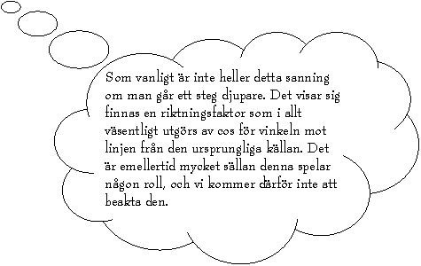
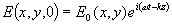
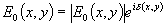
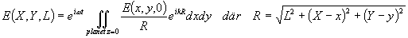
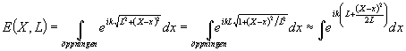
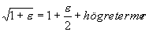
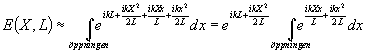

Matematisk beskrivning av de olika diffraktionstyperna
Det enda man egentligen kan utgå från är att alla punkter i ett ljusfält (alltså inte bara punkter i en öppning av ngt slag som det brukar stå i gymnasieböckerna) fungerar som källor till sfäriska vågor. Samverkan mellan olika sådana punkter i form av diffraktion leder alltså de ljusets alla välbekanta egenskaper.

Vi låter nu ljusets huvudutbredningsriktning vara z-axeln, och ett plan där vi känner till E-fältet är z=0. Transversella koordinater i detta plan är x och y. Det plan en sträcka L senare (dvs z=L) där vi ska beräkna fältet har transversella koordinater X och Y.
Om vi betecknar fältet i z=0 med
 där E0 innehåller E-fältets amplitud, men också dess fas genom att

Allmännt kommer då fältet i z=L att kunna skrivas som summan av alla fältbidrag (inklusive fas) från alla små ytsnuttar i z=0.
När fysiker säger "summan av alla små bidrag..." är detta i allmännhet en förskönande omskrivning för en ganska vedervärdig integral. Så även i detta fall:

Denna verkar inte så hemsk, men är faktiskt inte lösbar om E0 har något x och/eller y-beroende.
För att komma någonstans (innan hela den eventuella läsekretsen somnat) väljer vi att specialisera oss ordentligt. Vi tittar bara på en öppning i en dimension (dvs skippar variationer i y-led, vi antar alltså att öppningen är utan begränsning i y-led). Vi antar vidare att fältet har konstant amplitud över hela öppningen (betyder att öppningen träffas av en parallell ljusstråle. Vi får då

Det sista ledet fick vi genom att använda seriutvecklingen:

och att konstatera att X och x i de flesta praktiska fall är mycket mindre än L.
Vi får nu att

Det vi flyttat ut ur integralen är en fasfaktor med belopp 1 som försvinner när vi så småningom vill räkna ut intenstiteten (=observerbar varibel!!) genom att ta absolutbeloppkvadraten. Pga svårartad skrivkramp skippar vi den därför redan nu.
Räknar vi med bägge de återstående termerna i exponenten får vi den typ av diffraktion som kallas fresneldiffraktion. Detta måste man göra så länge som den andra termen, någonstans i öppningen kommer närheten av värdet
p !Övertyga dig gärna om att detta är detsamma som att öppningen sträcker sig utanför första fresnelzonen!!!
Så länge vi har fresneldiffraktion är man i nästan samtliga fall hänvisad till numeriska beräkningar, men i de fall den andra termen, i hela öppningen är väsentligt mindre än
p , kan denna försummas och återstår gör då den integrand som definierar Fraunhoferdiffraktion. Vi ser att detta villkor är uppfyllt i oändligheten eller i bilder av den (=foci).Varför försvinner inte den första termen i oändligheten?
!!!Vi får nu en integral som är tämligen lättberäknad.
Var nu glad och tänk på hur detta skulle varit att räkna i två dimensioner i stället!!